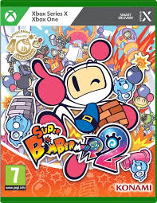

REGRESAR
BOMBERMAN

Generalmente, Bomberman tiene un cuerpo azul, brazos y piernas blancas con un cinturón negro, la cabeza está toda cubierta de color blanco, menos su frente, donde tiene unas largas rayas totalmente negras como ojos, pero no tiene pelo, nariz, ni orejas, sino que tiene una especie de antena en su cabeza con una bola rosada en la punta. Los zapatos son rosados y no tiene boca. Sin embargo, puede hablar y hace señas con la frente y con las manos para entenderse con quienes le hablan. En algunos videojuegos, aparecen como jugables otros Bomberman de color negro, azul, rojo y verde, pero se pueden ganar otros personajes que no son Bomberman en algunos videojuegos de la serie. Cabe destacar la existencia de los Bomberman como una especie alienígena, habiendo más de un Bomberman y de sexo masculino o femenino.
ARMA
Bomberman se identifica de manera obvia por su nombre, pero, según la historia de Bomberman 64: the second attack! para la consola Nintendo, él no podría usar esas bombas sino fuera por una de las "7 piedras" originantes del universo. La primera que tiene es la piedra de fuego (fire stone en inglés) de su planeta, el planeta bomber, de ahí proviene su energía para crear bombas. Durante este videojuego Bomberman va obteniendo las otras piedras que son del "agua", del "viento", de la "tierra", de la "electricidad", de la "oscuridad" y de la "luz".
Según otra teoría, presentada en el videojuego Bomberman Jetters, los Bomberman son capaces de hacer las bombas gracias a sus Bomb'Stars. Estas son siete, y se almacenan en la hebilla del cinturón de los Bomberman (la cual se puede abrir). Según Bomberman Jetters, las Bomb'Stars son pequeñas esferas que sirven de catalizador para el verdadero poder de un Bomberman.
PERSONAJES
En los videojuegos de Bomberman aparecen distintos personajes importantes:
Bomberman Negro: Amigo de Bomberman, su nombre en japonés es Kurobon. Es casi idéntico a él, pero tiene traje negro, por ello su nombre, pero la bola rosada en la punta de su cabeza, los zapatos del mismo color y la correa siguen fielmente a la idea original de Bomberman.
En sus primeras apariciones fue el antagonista en juegos como Bomberman (1990), Bomberman II o Bomberman '93. Posteriormente se vuelve aliado de Bomberman Blanco, actuando como personaje para el segundo jugador en el modo historia de ciertos juegos de la franquicia. Hay otros Bomberman, de color rojo y azul que también ayudan a Bomberman Negro y a Bomberman Blanco, pero son casi indefensos, al ver a Altair y su compañía demoler su planeta en Bomberman 64.
Miki-chan: Una muchacha muy linda pero algo violenta, está enamorada de Mighty desde la primera vez que se vieron, y desde entonces está dispuesta a ganarse su corazón; ella rehusó a la desaparición de Mighty, y presintió que él estuvo vivo todavía. Luego, se enamora de Birdy en Bomberman Jetters.
Regulus: aparece en Bomberman 64 - ¡El Segundo Ataque!, y es uno de los últimos enemigos, aunque al final se une a Bomberman, pero desaparece luego de dar parte de sus poderes a este en el acorazado Noa porque el enemigo de Bomberman, Rukifelth, le manda a un agujero negro. Su cuerpo ya no existe, pero su alma vive en una de las 7 piedras, concretamente en la que él tenía antes de dársela a Bomberman, la piedra de la oscuridad, que le da al que la posea la fuerza de originar agujeros negros y succionar a sus enemigos. Este personaje aparece anteriormente en Bomberman 64, es el controlador de uno de los 4 asteroides protectores del castillo de Altair.
Altair: El villano de Bomberman 64, con una idea de apoderarse de la energía de todos los planetas del universo, incluyendo el Planeta Bomberman y Altair. Antes de su derrota a manos de Bomberman, aparece Regulus y le salva. Aparece usualmente con un traje negro, ojos negros, y tiene una mascota máquina capaz de lanzar rayos láser. Prometió que volvería, pero desde la creación de Bomberman 64, no ha vuelto a resurgir de su derrota.
Pommy: Otro de los personajes aliados de Bomberman: es el mejor amigo de Bomberman y vive en la Base Bomber. Estos son los denominados Charaboms. Nació en el comienzo del mismo juego que Bulzeeb, Bomberman 64 - ¡El Segundo Ataque!, y es muy miedoso antes de pelear con los jefes, pero si se le alimenta durante el juego, se hace más fuerte. Desde su nacimiento, es una cosa rara que parece tener alas y es saltarín cuyo color es rosado, hasta tener la apariencia de un dragón de color más o menos oscuro y que lanza llamas.